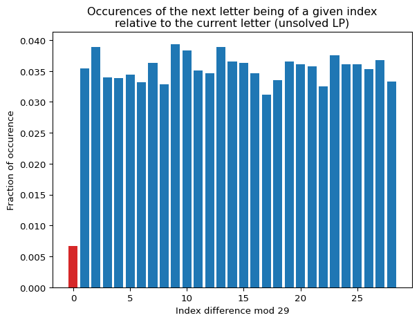
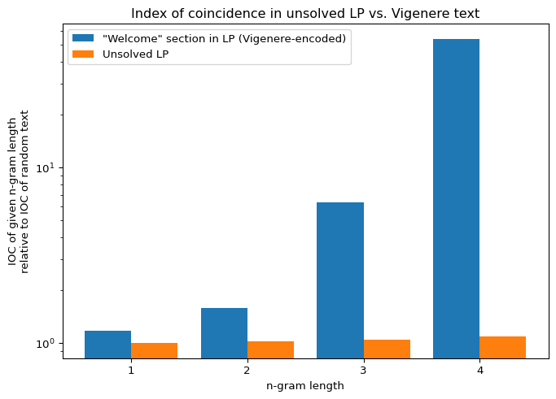
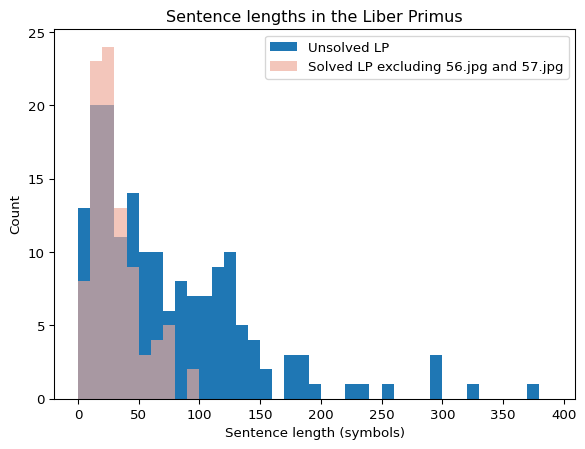

import numpy as npimport matplotlib.pyplot as pltimport syssys.path.append('..')from cryptext.cicada import liberprimus as lp, gematriaprimus as gp, futhorcfrom cryptext.analytics import ioc, expected_iocfrom cryptext.ciphers import atbash
This is an overview of the properties of the text in Liber Primus. It contains basic facts about its text; it does not contain any in-depth information about its other facets (e.g. its artworks or themes).
Liber Primus is a book written by Cicada 3301, first uncovered in 2014 as a part of the 3rd and last Cicada 3301 puzzle. Liber Primus may translate to ‘First Book’ but may also mean ‘Book of Primes’ (the ambiguity could also be intentional). The vast majority of the text in Liber Primus is written in Anglo-Saxon runes (shortly referred to as ‘Futhorc’), and often also encrypted on top of that. The text is often ideological or philosophical and in particular contains many references to the works of William Blake.
The available pages of Liber Primus comprise of 75 pages (at least if we include the book’s and 1st chapter’s title pages). The first 17 of them were uncovered gradually during the 2014 puzzle, and have all been decrypted shortly after their discovery. The last 59 pages were obtained in bulk from a single web page, and out of them, only two have been successfully translated at most a few months from their discovery (out of which one was unencrypted and directly translatable from runes). The remaining 57 pages remain undeciphered to this day.
Formatting
Most passages in Liber Primus are in Futhorc, which includes custom punctuation marks in form of groups of dots (1 dot = space, 2|3 dots = colon|semicolon, 4 dots = period, etc.). There are also more modern punctuation marks in a modern font, such as quotation marks, apostrophes, or arabic numbers (the modern font is Futura, which is generally Cicada’s font of choice). This punctuation follows the meaning of the plaintext and has been used to help guide decryption. Text is further split into paragraphs and sections. Since only the title page of the first chapter is available, it is likely that all known Liber Primus pages (barring the title page and possibly some introductory pages) belong to a single chapter.
Solved Pages
All solved pages are either directly translatable from runes, or use some substitution cipher (none of the solved pages use transposition). All solved pages use only monoalphabetic substitution (i.e. atbash, caesar, and their combination) or vigenere, with the only exception being 56.jpg (the only encrypted and solved page from the last batch), which uses a running key of primes minus one. The ciphers are also modified from their basic forms, which complicates their decryption and analysis.
One modification (true for all solved pages) is that the encryption relies on the ordering of the Futhorc alphabet, which means that decryption first has to be done fully in runes and only then can the decrypted message be translated to text in latin letters; translating to latin letters first disrupts the ordering of the runes, making subsequent decryption impractical, if not impossible.
Code
text0 = lp.section_warning().content()print('Original text of the first page in runes:')print(text0)text1 = atbash(text0, futhorc)print('Step 1. Decrypt the text using atbash in futhorc:')print(text1)print('Step 2. Translate the result to the latin alphabet:')print(gp.decode(text1))
Original text of the first page in runes:
ᚱ-ᛝᚱᚪᛗᚹ.ᛄᛁᚻᛖᛁᛡᛁ-ᛗᚫᚣᚹ-ᛠᚪᚫᚾ-ᚣᛖᛈ-ᛄᚫᚫᛞ.ᛁᛉᛞᛁᛋᛇ-ᛝᛚᚱᛇ-ᚦᚫᛡ-ᛞᛗᚫᛝ-ᛇᚫ-ᛄᛁ-ᛇᚪᛡᛁ.ᛇᛁᛈᛇ-ᚣᛁ-ᛞᛗᚫᛝᚻᛁᚳᛟᛁ.ᛠᛖᛗᚳ-ᚦᚫᛡᚪ-ᛇᚪᛡᚣ.ᛁᛉᛋᛁᚪᛖᛁᛗᛞᛁ-ᚦᚫᛡᚪ-ᚳᚠᚣ.ᚳᚫ-ᛗᚫᛇ-ᛁᚳᛖᛇ-ᚫᚪ-ᛞᛚᚱᚹᛁ-ᚣᛖᛈ-ᛄᚫᚫᛞ.ᚫᚪ-ᚣᛁ-ᚾᛁᛈᛈᚱᛟᛁ-ᛞᚫᛗᛇᚱᛖᛗᛁᚳ-ᛝᛖᚣᛖᛗ.ᛁᛖᚣᛁᚪ-ᚣᛁ-ᛝᚫᚪᚳᛈ-ᚫᚪ-ᚣᛁᛖᚪ-ᛗᛡᚾᛄᛁᚪᛈ.ᛠᚫᚪ-ᚱᚻᚻ-ᛖᛈ-ᛈᚱᛞᚪᛁᚳ.
Step 1. Decrypt the text using atbash in futhorc:
ᚪ-ᚹᚪᚱᚾᛝ.ᛒᛖᛚᛁᛖᚢᛖ-ᚾᚩᚦᛝ-ᚠᚱᚩᛗ-ᚦᛁᛋ-ᛒᚩᚩᚳ.ᛖᛉᚳᛖᛈᛏ-ᚹᚻᚪᛏ-ᚣᚩᚢ-ᚳᚾᚩᚹ-ᛏᚩ-ᛒᛖ-ᛏᚱᚢᛖ.ᛏᛖᛋᛏ-ᚦᛖ-ᚳᚾᚩᚹᛚᛖᛞᚷᛖ.ᚠᛁᚾᛞ-ᚣᚩᚢᚱ-ᛏᚱᚢᚦ.ᛖᛉᛈᛖᚱᛁᛖᚾᚳᛖ-ᚣᚩᚢᚱ-ᛞᛠᚦ.ᛞᚩ-ᚾᚩᛏ-ᛖᛞᛁᛏ-ᚩᚱ-ᚳᚻᚪᛝᛖ-ᚦᛁᛋ-ᛒᚩᚩᚳ.ᚩᚱ-ᚦᛖ-ᛗᛖᛋᛋᚪᚷᛖ-ᚳᚩᚾᛏᚪᛁᚾᛖᛞ-ᚹᛁᚦᛁᚾ.ᛖᛁᚦᛖᚱ-ᚦᛖ-ᚹᚩᚱᛞᛋ-ᚩᚱ-ᚦᛖᛁᚱ-ᚾᚢᛗᛒᛖᚱᛋ.ᚠᚩᚱ-ᚪᛚᛚ-ᛁᛋ-ᛋᚪᚳᚱᛖᛞ.
Step 2. Translate the result to the latin alphabet:
a-warning.believe-nothing-from-this-booc.except-what-yov-cnow-to-be-trve.test-the-cnowledge.find-yovr-trvth.experience-yovr-death.do-not-edit-or-chainge-this-booc.or-the-message-contained-within.either-the-words-or-their-nvmbers.for-all-is-sacred.
The other known modification is that for ciphers with a running key (i.e. vigenere and stream of primes), the f rune (ᚠ) interrupts the encryption and shifts the key by itself, while the f remains unencrypted. Besides throwing off most methods for analysing the ciphertext, this modification makes decryption of the text require guesswork, as even if you have the key, you cannot tell whether the next f is a part of the plaintext, or simply a product of encryption, and so have to guess whether to skip decrypting it or not.
Unsolved Pages
The unsolved pages are 0.jpg-56.jpg and the runes in each of them have the same properties – they seem completely random, except for a very low occurence of two of the same rune next to each other. No other property is known to differentiate the runes alone from random text.
Code
fig_title ='Occurences of the next letter being of a given index\nrelative to the current letter (unsolved LP)'unsolved = lp.load_unsolved().symbols()letter_difference_counts = [0.0] * futhorc.size()for i inrange(len(unsolved) -1): diff = (futhorc.index(unsolved[i+1]) - futhorc.index(unsolved[i])) %29 letter_difference_counts[diff] +=1/len(unsolved)fig, ax = plt.subplots()ax.set_xlabel('Index difference mod 29')ax.set_ylabel('Fraction of occurence')ax.bar(range(futhorc.size()), letter_difference_counts, color=['tab:red'] + (['tab:blue'] * (futhorc.size() -1)))ax.set_title(fig_title)plt.show()

This immediatelly eliminates any monoalphabetic substitution ciphers, since their texts have uneven distribution of letters. And it gets worse, as even vigenere ciphers, given enough text, generate repeating ngrams of letters at a much higher rate than pure random text (e.g. this is what makes Kasiski Analysis possible), and yet Liber Primus does not have a higher than expected amount of them.
Code
fig_title ='Index of coincidence in unsolved LP vs. Vigenere text'vigenere = lp.section_welcome().symbols()unsolved = lp.load_unsolved().symbols()xs =range(1, 5)viocs = [ ioc(vigenere, futhorc, l) / expected_ioc(futhorc, l) for l in xs ]uiocs = [ ioc(unsolved, futhorc, l) / expected_ioc(futhorc, l) for l in xs ]gx = np.arange(len(xs))width =0.4fig, ax = plt.subplots(layout='constrained')ax.set_xlabel('n-gram length')ax.set_xticks(gx + width/2, xs)ax.set_ylabel('IOC of given n-gram length\nrelative to IOC of random text')ax.set_yscale('log')ax.bar(gx, viocs, width, label='\"Welcome\" section in LP (Vigenere-encoded)')ax.bar(gx + width, uiocs, width, label='Unsolved LP')ax.legend()ax.set_title(fig_title)plt.show()

Side-note: The IOC goes higher up to n-gram length 6, where a single repeated 6-gram (the fabled dju-bei) puts unsolved LP in approx. the top 14% of texts. Unfortunately, there are no repeated 7+grams, and even top 14% is not enough for a statistically significant top 5%. That said, dju-bei is probably still worth looking into.
Code
n =6uioc = ioc(unsolved, futhorc, n) / expected_ioc(futhorc, n)total =2000counter =0for _ inrange(total): rld = futhorc.random_ld(len(unsolved)) i = ioc(rld, futhorc, n) / expected_ioc(futhorc, n)if uioc <= i: counter +=1print (f'for ngram length {n} (the highest IOC) the value is in top {counter * (100/ total)}%')
for ngram length 6 (the highest IOC) the value is in top 14.450000000000001%
The unsolved pages are formatted in a similar fashion to the solved ones. They are visually split into sections with different illustrations, which has given each of the sections a name used by solvers, although these names are not official, and might not even be correct. Due to the identical properties of the text on all of the unsolved pages, it is possible that section divisions are not even relevant to the used cipher.
The punctuation is vastly reduced (i.e. there are almost no colons or semicolons) and sentences are sometimes a lot longer than in the solved pages, but otherwise, words seem similarly long, and details like a number in a middle of a sentence or an apostrophe in the middle of a word seem to hint that the pages are still encrypted using some substitution cipher. Still, no patterns other than the low doublets were found.
Code
fig_title ='Sentence lengths in the Liber Primus'bsentences = [ len(s.symbols()) for s in lp.load_before_unsolved().sentences() ]bsentences = [ s for s in bsentences if s >0 ]usentences = [ len(s.symbols()) for s in lp.load_unsolved().sentences() ]usentences = [ s for s in usentences if s >0 ]fig, ax = plt.subplots()ax.set_xlabel('Sentence length (symbols)')ax.set_ylabel('Count')ax.hist(usentences, bins=range(0, 400, 10), label='Unsolved LP')ax.hist(bsentences, bins=range(0, 400, 10), label='Solved LP excluding 56.jpg and 57.jpg', color='#eeaa99aa')ax.legend()ax.set_title(fig_title)plt.show()

Code
fig_title ='Word lengths in the Liber Primus'wordlengths =range(1, 15)bwords = [0.0] *len(wordlengths)bw = lp.load_before_unsolved().words()for w in bw: bwords[len(w) -1] +=1/len(bw)uwords = [0.0] *len(wordlengths)uw = lp.load_unsolved().words()for w in uw: uwords[len(w) -1] +=1/len(uw)fig, ax = plt.subplots()ax.set_xlabel('Word length (symbols)')ax.set_ylabel('Percentage')ax.bar(wordlengths, uwords, label='Unsolved LP')ax.bar(wordlengths, bwords, label='Solved LP excluding 56.jpg and 57.jpg\n(copied by 4 to match counts)', color='#eeaa99aa')ax.legend()ax.set_title(fig_title)plt.show()